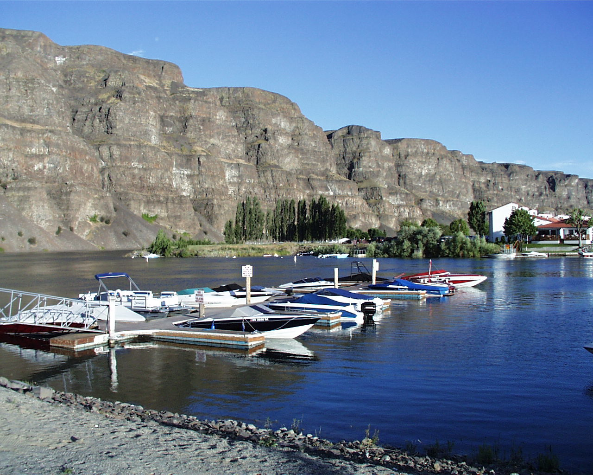
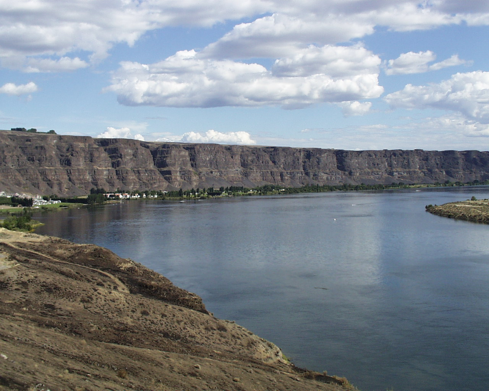

Crescent Bar
Crescent Bar Resort on the Columbia River in Central Washington is a water lover's
paradise.


Nestled amidst the stunning landscapes of Washington State, Crescent Bar Resort stands as a beacon of
leisure and tranquility along the shores of the mighty Columbia River. This picturesque destination offers
an escape from the ordinary, where sun-kissed days and starlit nights create an enchanting backdrop for
unforgettable experiences.
With its prime location, Crescent Bar Resort beckons both adventurers and relaxation-seekers alike. The
resort boasts a wealth of amenities and activities to cater to every taste and preference. From thrilling
water sports and scenic hiking trails to serene moments by the poolside,
there's something for everyone to indulge in.
Accommodations at Crescent Bar Resort are designed with comfort and convenience in mind. Whether you prefer
a spacious condominium overlooking the water, a campsite with a great view, or a trailer of your own, each
lodging option offers a blend of modern amenities and rustic charm.
Beyond its natural beauty and recreational offerings, Crescent Bar Resort is steeped in a rich history and
vibrant local culture. Guests can explore nearby attractions such as the Gorge Amphitheatre, renowned for
its spectacular concerts, or delve into the region's wineries and farm-to-table dining experiences.
Whether you're planning a family vacation, a romantic getaway, or a gathering with friends, Crescent Bar
Resort invites you to unwind, explore, and create cherished memories against the backdrop of Washington's
breathtaking scenery.